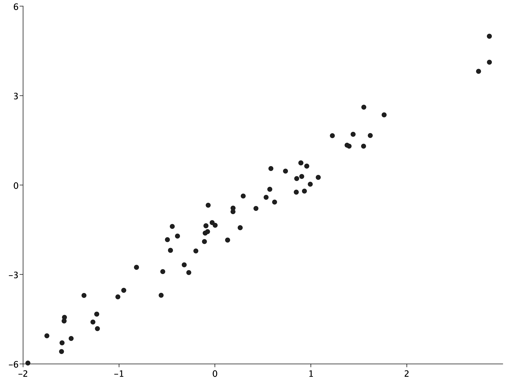

import coursier.MavenRepository
interp.repositories() ++= Seq(MavenRepository(
"http://dl.bintray.com/cibotech/public"
))[32mimport [39m[36mcoursier.MavenRepository
[39mimport coursier.MavenRepository
interp.repositories() ++= Seq(MavenRepository(
"http://dl.bintray.com/cibotech/public"
))[32mimport [39m[36mcoursier.MavenRepository
[39mimport $ivy.`com.stripe::rainier-core:0.2.2`
import com.stripe.rainier.core._
import com.stripe.rainier.sampler._
import $ivy.`com.stripe::rainier-plot:0.2.2`[32mimport [39m[36m$ivy.$
[39m
[32mimport [39m[36mcom.stripe.rainier.core._
[39m
[32mimport [39m[36mcom.stripe.rainier.sampler._
[39m
[32mimport [39m[36m$ivy.$ [39mval (alpha, beta, sigma) = (-1.5, 2.0, 0.5)
// using sampling monad to create synthetic data
val lm = for {
x <- Normal(0, 1).param
y <- Normal(alpha + beta * x, sigma).param
} yield (x, y)
implicit val s = RNG.default
val sims = lm.sample(100)[36malpha[39m: [32mDouble[39m = [32m-1.5[39m
[36mbeta[39m: [32mDouble[39m = [32m2.0[39m
[36msigma[39m: [32mDouble[39m = [32m0.5[39m
[36mlm[39m: [32mRandomVariable[39m[([32mcom[39m.[32mstripe[39m.[32mrainier[39m.[32mcompute[39m.[32mReal[39m, [32mcom[39m.[32mstripe[39m.[32mrainier[39m.[32mcompute[39m.[32mReal[39m)] = com.stripe.rainier.core.RandomVariable@303a2c9e
[36ms[39m: [32mRNG[39m = [33mScalaRNG[39m([32m1555339946882L[39m)
[36msims[39m: [32mList[39m[([32mDouble[39m, [32mDouble[39m)] = [33mList[39m(
([32m-0.27247704057213673[39m, [32m-2.937174139009242[39m),
([32m0.904706738880923[39m, [32m0.2873337749353697[39m),
([32m0.852183004859444[39m, [32m0.21651653790799275[39m),
([32m-0.39035717167844597[39m, [32m-1.7128969360400819[39m),
([32m-0.39035717167844597[39m, [32m-1.7128969360400819[39m),
([32m-0.32022958270507923[39m, [32m-2.6778655637209248[39m),
([32m-0.46351051511185715[39m, [32m-2.191504684058077[39m),
([32m-0.46351051511185715[39m, [32m-2.191504684058077[39m),
([32m-0.46351051511185715[39m, [32m-2.191504684058077[39m),
([32m-0.46351051511185715[39m, [32m-2.191504684058077[39m),
([32m1.3771155460388853[39m, [32m1.3365959279685458[39m),
([32m-0.49530687121967953[39m, [32m-1.833522063303271[39m),
([32m1.0768869181666785[39m, [32m0.2563581689102623[39m),
([32m1.0768869181666785[39m, [32m0.2563581689102623[39m),
([32m-1.0116365008420507[39m, [32m-3.752541734789177[39m),
([32m2.7476547917502754[39m, [32m3.8144224426177082[39m),
([32m2.7476547917502754[39m, [32m3.8144224426177082[39m),
([32m-1.9494596187935684[39m, [32m-5.97285704598621[39m),
([32m-0.029076281551169814[39m, [32m-1.2606332122515638[39m),
([32m0.8957907429984171[39m, [32m0.7423301548354151[39m),
([32m0.8957907429984171[39m, [32m0.7423301548354151[39m),
([32m0.8957907429984171[39m, [32m0.7423301548354151[39m),
([32m0.8957907429984171[39m, [32m0.7423301548354151[39m),
([32m0.8957907429984171[39m, [32m0.7423301548354151[39m),
([32m0.8957907429984171[39m, [32m0.7423301548354151[39m),
([32m0.8957907429984171[39m, [32m0.7423301548354151[39m),
([32m0.8957907429984171[39m, [32m0.7423301548354151[39m),
([32m0.0023588460061185756[39m, [32m-1.3506243761132446[39m),
([32m-0.0935197030194973[39m, [32m-1.3679664205943545[39m),
([32m-0.0935197030194973[39m, [32m-1.3679664205943545[39m),
([32m-0.0935197030194973[39m, [32m-1.3679664205943545[39m),
([32m-0.0935197030194973[39m, [32m-1.3679664205943545[39m),
([32m-0.0935197030194973[39m, [32m-1.3679664205943545[39m),
([32m0.9936677194000182[39m, [32m0.027360397529156755[39m),
([32m-0.5437438839438696[39m, [32m-2.9048447906186814[39m),
([32m0.5717862996712749[39m, [32m-0.14270893763715198[39m),
([32m0.5717862996712749[39m, [32m-0.14270893763715198[39m),
([32m1.5491575238352386[39m, [32m1.3029810178933499[39m),
...import com.cibo.evilplot.numeric.Point
import com.cibo.evilplot.plot._
import com.cibo.evilplot.plot.renderers.PointRenderer
import com.cibo.evilplot.plot.aesthetics.DefaultTheme._
def renderBytes(plot: com.cibo.evilplot.plot.Plot) = {
val baos = new java.io.ByteArrayOutputStream
javax.imageio.ImageIO
.write(
plot.render().asBufferedImage,
"png",
baos)
val array = baos.toByteArray
baos.close
array
}[32mimport [39m[36mcom.cibo.evilplot.numeric.Point
[39m
[32mimport [39m[36mcom.cibo.evilplot.plot._
[39m
[32mimport [39m[36mcom.cibo.evilplot.plot.renderers.PointRenderer
[39m
[32mimport [39m[36mcom.cibo.evilplot.plot.aesthetics.DefaultTheme._
[39m
defined [32mfunction[39m [36mrenderBytes[39mimport almond.interpreter.api._
DisplayData
.png(renderBytes(ScatterPlot(
sims.map { case (x, y) => Point(x, y) }
).xAxis()
.yAxis()
.frame()
.rightLegend()))
.show()
[32mimport [39m[36malmond.interpreter.api._
[39mimport com.stripe.rainier.compute._
// import com.stripe.rainier.core._
// import com.stripe.rainier.sampler._
def linearModel(data: Seq[(Double, Double)]): RandomVariable[Map[String, Real]] = for {
alpha <- Normal(0, 5).param
beta <- Normal(0, 5).param
sigma <- LogNormal(2, 2).param
_ <- Predictor[Double].from { x =>
Normal(alpha + beta * x, sigma)
}
.fit(data)
} yield Map("alpha" -> alpha, "beta" -> beta, "sigma" -> sigma)[32mimport [39m[36mcom.stripe.rainier.compute._
// import com.stripe.rainier.core._
// import com.stripe.rainier.sampler._
[39m
defined [32mfunction[39m [36mlinearModel[39m[36miters[39m: [32mList[39m[[32mMap[39m[[32mString[39m, [32mDouble[39m]] = [33mList[39m(
[33mMap[39m(
[32m"alpha"[39m -> [32m-1.5103698284824398[39m,
[32m"beta"[39m -> [32m2.1544564171494365[39m,
[32m"sigma"[39m -> [32m0.41662922813248277[39m
),
[33mMap[39m(
[32m"alpha"[39m -> [32m-1.5184685380426082[39m,
[32m"beta"[39m -> [32m2.151465637838073[39m,
[32m"sigma"[39m -> [32m0.44342253807901993[39m
),
[33mMap[39m(
[32m"alpha"[39m -> [32m-1.4660649259572445[39m,
[32m"beta"[39m -> [32m2.109083551551442[39m,
[32m"sigma"[39m -> [32m0.4400355956497668[39m
),
[33mMap[39m(
[32m"alpha"[39m -> [32m-1.4109510885911971[39m,
[32m"beta"[39m -> [32m2.1277107205510815[39m,
[32m"sigma"[39m -> [32m0.4686446685131451[39m
),
[33mMap[39m(
[32m"alpha"[39m -> [32m-1.5024888711982174[39m,
[32m"beta"[39m -> [32m2.177295567537438[39m,
[32m"sigma"[39m -> [32m0.4441577745103689[39m
),
[33mMap[39m(
[32m"alpha"[39m -> [32m-1.5198813109824225[39m,
[32m"beta"[39m -> [32m2.17897636639043[39m,
[32m"sigma"[39m -> [32m0.5047230361547242[39m
),
[33mMap[39m(
[32m"alpha"[39m -> [32m-1.4834223247926301[39m,
[32m"beta"[39m -> [32m2.172806338771708[39m,
[32m"sigma"[39m -> [32m0.48139800434682717[39m
),
[33mMap[39m(
[32m"alpha"[39m -> [32m-1.544972407765386[39m,
[32m"beta"[39m -> [32m2.1307286606911577[39m,
...import com.cibo.evilplot.geometry._
import com.stripe.rainier.plot._
def traces(out: Seq[Map[String, Double]],
truth: Map[String, Double] = Map(),
lagMax: Int = 40,
numBars: Int = 50): Unit =
DisplayData
.png(
EvilTracePlot.renderBytes(
EvilTracePlot.traces(out, truth, lagMax, numBars),
Extent(1200, out.head.keys.size * 300.0)))
.show()
def pairs(out: Seq[Map[String, Double]],
truth: Map[String, Double] = Map(),
numBars: Int = 30): Unit =
DisplayData
.png(
EvilTracePlot.renderBytes(EvilTracePlot.pairs(out, truth, numBars),
Extent(out.head.keys.size * 300.0,
out.head.keys.size * 300.0)))
.show()[32mimport [39m[36mcom.cibo.evilplot.geometry._
[39m
[32mimport [39m[36mcom.stripe.rainier.plot._
[39m
defined [32mfunction[39m [36mtraces[39m
defined [32mfunction[39m [36mpairs[39m